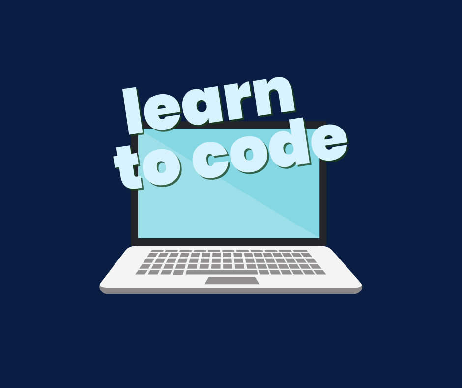

A LearnTogether nem csak egy újabb elméleti gyorstalpaló. Nálunk interaktív feladatokon keresztül, azonnali visszajelzéssel tanulhatsz. Olvasd el a magyarázatot, írd meg a kódot közvetlenül a böngésződben, és válj magabiztos fejlesztővé a saját tempódban!
Tantárgyak
Feladat betöltése...